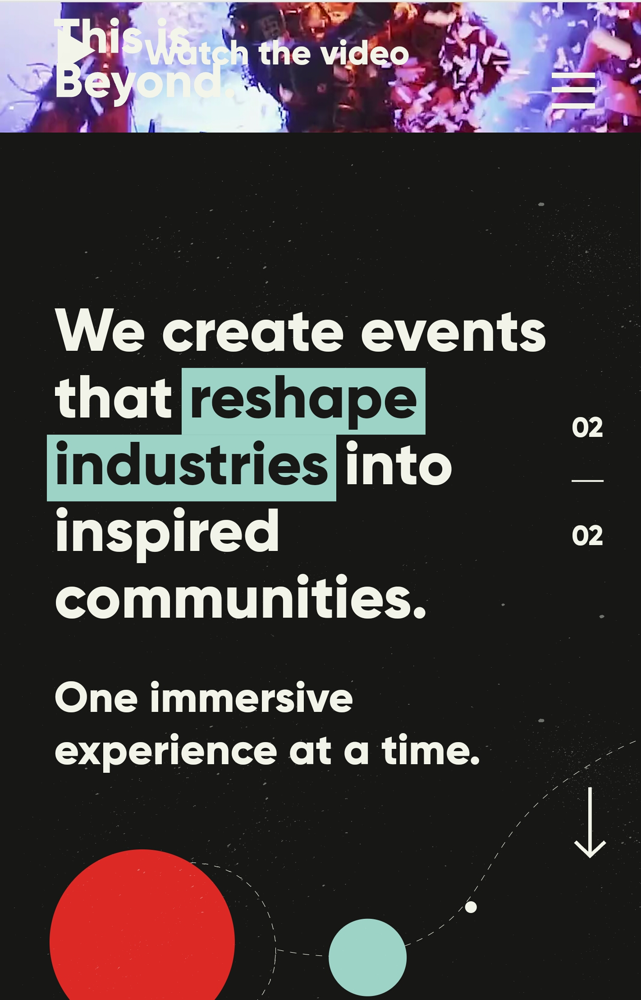

Contrast
This is Beyond
ThisIsBeyong.com

Contract is the difference between elements within a design,
that makes them stand out from each other.
In the above web page, contrast was to create emphasis.
Highlighting “reshape industries” in a contrasting color
draws the reader’s eye to that particular bit of text,
emphasizing it and setting it apart from the surrounding text
repetition
Pentawards
Pentawards.com
repetition reinforces an idea or perception. It can be done via
using things like the same format for heading, reusing the same color,
image or similar choices.
In the above web page, repetition is being used in the color of the
heading and other elements of the page. Also repetition is used in the
font family.
White Space
Ipad-pro
Ipad-pro.com
White space or negative space is simply unmarked space in the design.
It is the space between the layouts, lines of paragraphs, between
paragraphs, between different UI elements and so on. White space does
not literally mean an empty space with a white background. It can be of
any color, texture, patterns or even a background image.
In the above web page, the white space left over draws readers
or users eyes to focus on the product and its caracteristics.
Users eyes are less stressed and focus.